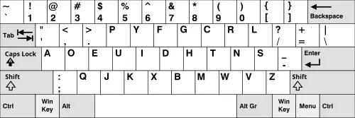
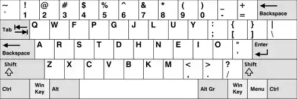
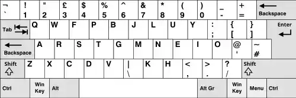

Introduction
I’m a productivity enthusiast. I’m always looking for ways to optimize tasks so they take less time, require less effort, or simply feel less like a chore. This obsession has led me to refine everything from my daily schedule to my digital workflows. Yet for years, I overlooked the most fundamental tool I use every single day: the keyboard. More specifically, I never questioned the arrangement of the letters themselves.
We learn the QWERTY layout once as children and then proceed to use it for hundreds of millions of keystrokes over a lifetime. It’s the default setting for how we interact with our computers, a standard so deeply ingrained that we accept it without a second thought. But what if that default isn’t the best? What if it’s an outdated system that subtly hinders our speed and comfort every single day?
These questions became impossible to ignore when I recently switched to a modern, ergonomic keyboard. The new hardware, designed for comfort and efficiency, immediately rejected the old, inefficient layout I was forcing upon it. My brain knew the words, but my fingers were lost at sea on a foreign grid. Simple sentences became frustrating puzzles, and my typing speed—once a source of quiet pride—plummeted to a painful, humiliating hunt-and-peck crawl. The disconnect wasn’t just jarring; it was a complete system failure. It wasn’t the keyboard that was flawed; it was the invisible operating system I was running on it. This realization launched me on a deep dive into the world of alternative keyboard layouts, starting with a critical look at the one we all take for granted.
The Incumbent: QWERTY
Most of us use QWERTY without a second thought. Patented by Christopher Latham Sholes in 1874, its primary design goal was not user comfort or speed, but a mechanical necessity. It was engineered to slow typists down just enough to prevent the physical arms of a mechanical typewriter from clashing and jamming. To achieve this, it strategically separated common letter pairings like ‘th’ and ‘st’.

The Problem with QWERTY:
-
High Finger Travel: Your fingers fly across the keyboard to type even simple words. Over a day, this adds up to hundreds of meters of unnecessary movement.
-
Home Row Underutilization: Only about 32% of typing is done on the home row, forcing you to constantly reach for the top and bottom rows.
-
Unbalanced Workload: The left hand does significantly more work than the right. Furthermore, many common letters are relegated to the weakest fingers (e.g., ‘A’ and ‘;’).
It’s the universal standard, but it’s a legacy built on solving a problem that no longer exists. I began to wonder: is “it just works” good enough?
The Classic Challenger: Dvorak
My research naturally led me first to the Dvorak Simplified Keyboard (DSK). Created by Dr. August Dvorak and William Dealey in the 1930s, it was the first layout designed with ergonomic principles and efficiency in mind.

The Dvorak Philosophy:
-
Maximize Home Row Usage: A staggering 70% of typing is performed on the home row, drastically reducing finger travel. All vowels are placed on the left-hand home row.
-
Promote Hand Alternation: The layout is optimized so that keystrokes flow back and forth between the hands, creating a smoother typing rhythm.
-
Load-Balance the Hands: The workload is distributed much more evenly, with the right hand (for most right-handed typists) doing slightly more work.
Despite its clear, data-backed advantages, the Dvorak layout felt like a complete reset. The learning curve is notoriously steep, and critical shortcuts like Ctrl+C and Ctrl+V are scattered to entirely new locations. As someone who still needs to use standard keyboards at work, the prospect of managing such a radical cognitive switch felt impractical. It was a beautiful solution, but it wasn’t my solution.
The Modern Contender: Colemak
This is where I got hooked. Developed by Shai Coleman in 2006, Colemak is a modern layout designed as a practical and ergonomic alternative to QWERTY. It seeks to solve QWERTY’s problems without forcing users to abandon everything they know.

The Colemak Advantage:
-
Intelligent Changes: Colemak only changes 17 keys from the QWERTY layout, making the transition significantly less jarring. The ten most frequent letters of English, plus the backspace key, are all on the home row.
-
Familiar Shortcuts: Crucially, the bottom-row keys (
Z,X,C,V) remain untouched. This means the vitalCut,Copy, andPasteshortcuts are exactly where your muscle memory expects them to be. Punctuation and number keys also stay in place. -
Superior Ergonomics: Colemak boasts over twice as much home-row usage as QWERTY, drastically reduces finger travel distance, and virtually eliminates awkward “same-finger bigrams” (typing two consecutive letters with the same finger).
Colemak felt like the perfect compromise. It offered a massive ergonomic upgrade without the daunting learning curve of Dvorak. It was a practical path forward.
The Refinement: Colemak-DH
Just as I was about to commit, I discovered Colemak-DH. This is a popular community modification of Colemak that addresses one of its few remaining ergonomic quirks. Standard Colemak places the ‘D’ and ‘H’ keys in the center columns of the keyboard. For some typists, this requires an uncomfortable lateral stretch with the index fingers.
The Colemak-DH mod (specifically, the “Angle Mod” variant) fixes this. It moves ‘D’ and ‘H’ to more accessible positions, promoting a more neutral wrist and hand posture. This seemingly minor tweak was the final piece of the puzzle for me. On my split Voyager keyboard, where my hands are already in a more natural position, the DH mod felt like the layout’s intended final form. It eliminated that last bit of awkward finger-reaching.

This was the breakthrough. With Colemak-DH, my keyboard no longer felt like an adversary; it felt like an extension of my hands.
The Journey’s Reward
I am still mastering this new layout, and I won’t pretend the first few weeks weren’t humbling. There were moments of intense frustration where switching back felt like the only sane option. But pushing through that initial wall has been transformative. Typing is no longer a conscious effort of commanding my fingers; it’s becoming a subconscious flow. The barrier between my thoughts and the words appearing on the screen is thinning every day. If you spend hours at a keyboard, I can’t recommend this journey enough. Questioning the default isn’t just about finding a better tool; it’s about forging a better relationship with your own work, one keystroke at a time.